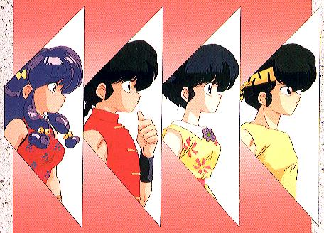

Ranma 1/2

From the Anime Pocket Guide:
Cast:
Ranma Saotome (boy) .................... Kappei Yamaguchi
Ranma Saotome (girl) ................. Megumi Hayashibara
Akane Tendou .............................. Noriko Hidaka
Kasumi Tendou .............................. Kikuko Inoue
Nabiki Tendou ........................... Minami Takayama
Shampoo ...................................... Rei Sakuma
Ukyou Kuonji ............................... Hiromi Tsuru
Ryouga Hibiki ......................... Kouichi Yamadera
Happosai .................................. Ichirou Nagai
Tatewaki Kunou ......................... Hirotaka Suzuoki
Kodachi "Black Rose" Kunou ................ Saeko Shimazu
Sasuke .................................... Shigeru Chiba
Mikado Sanzenin .......................... Kazuhiko Inoue
Azusa Shiratori ............................ Naoko Matsui
Hikaru Gosunkugi ......................... Issei Futamata
Daisuke ................................. Takehito Koyasu
Description:
One day, Soun Tendo calls his 3 daughters in and tells them that
one of them is going to be iinazuke (fiancee) to Ranma, the son
of his best friend. Soun faints when Ranma arrives and turns
out to be a *girl*. It soon turns out that Ranma is really a
boy, but has a curse where he will turn into a girl when cold
water is splashed on him. Hot water returns him to normal.
Nabiki & Kasumi immediately elect Akane as the iinazuke because
"she hates boys and Ranma is only half a boy". Ranma, for his
part, doesn't like Akane because she's violent and "not cute".
Akane is miffed at Ranma because he beat her in martial arts
(Ranma was a girl then) and shows her feelings by crushing Ranma
with a table. A wonderful start to a beautiful relationship :-).
A martial arts comedy by Rumiko Takahashi. Note that the 2nd TV
season onward is known as "Ranma 1/2 Nettouhen".
Other Resources
Anime Video Game Resource Center © 1998 by Luis A. Cruz